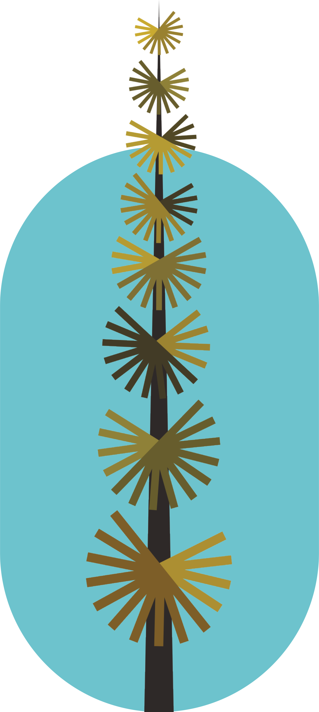
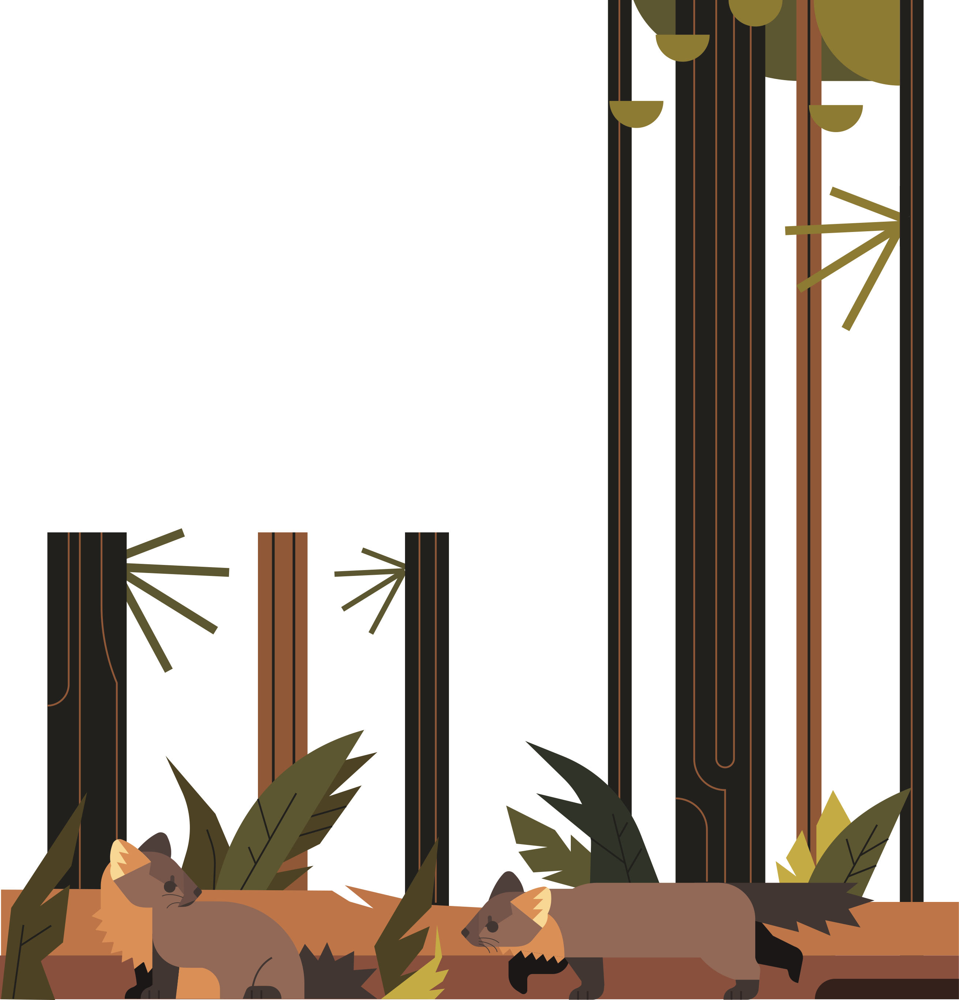

Like its cousin, the American Marten, the Pacific Marten has a long body and short legs, covered in similarly-long fur. Pacific Martens can grow up to 65 cm (25.6 in) long. Their fur color also ranges in shade, appearing in dark brown as well as tan, and equipped with a patch of orange on its chest. Pacific Martens are equipped with long, thick tails and claws to easily climb trees, as well as wide paws to navigate across the surface of the snow.
At a brief glance, Pacific Martens are strinkingly similar to American Martens, and can be easily mistaken for one another. Luckily, the shape of its head is the biggest giveaway. Compared to the American Marten, the Pacific Marten has a longer and more narrow muzzle with a wider head and spaced out ears. It has a more box-shaped head, giving this species a more canine-look.
The Pacific Marten is found exclusively in the Pacific Northwest, unlike its cousin, the American Marten, who has sparse populations on the East Coast. The Pacific Marten ranges from Northern California to Vancouver Island and its Pacific island neighbors. They are also found on two distinct islands in Alaksa, Kuiu and Admiralty Island. Uniquely, bot the Pacific Marten and the American Marten are observed to have created hybrid species between themselves on Kuiu Island. Pacific Martens are found in old-growth evergreen forests along the coast and higher elevations in the Rocky Mountains due to their ability to withstand the cold of the now.

Due to their smaller range, Pacific Martens have a less diverse diet, depending on small mammals, usually squirrels and voles, alongside birds and carrion, with an occasional fish for those who live by bodies of water. Cannibalism isn't even off the table during the desparate seasons of starvation. Because of these conditions, Pacific Martens evolved to take advantage of any feeding opportunity, stealing leftovers from larger predators and foraging for plants that other carnivorous animals would normally dismiss. They are even known for stealing snacks, such as "sweet jams" from humans.
Pacific Martens are born in litters of 3 or 4 during spring. While defenseless and dependant on their mother for their first few weeks of life, Pacific Marten kits develop quickly, having their survival skills by the summer, and becoming completely dependent by fall. In just two seasons, Pacific Martens leave their mother's territory and find their own mates by their second year.
